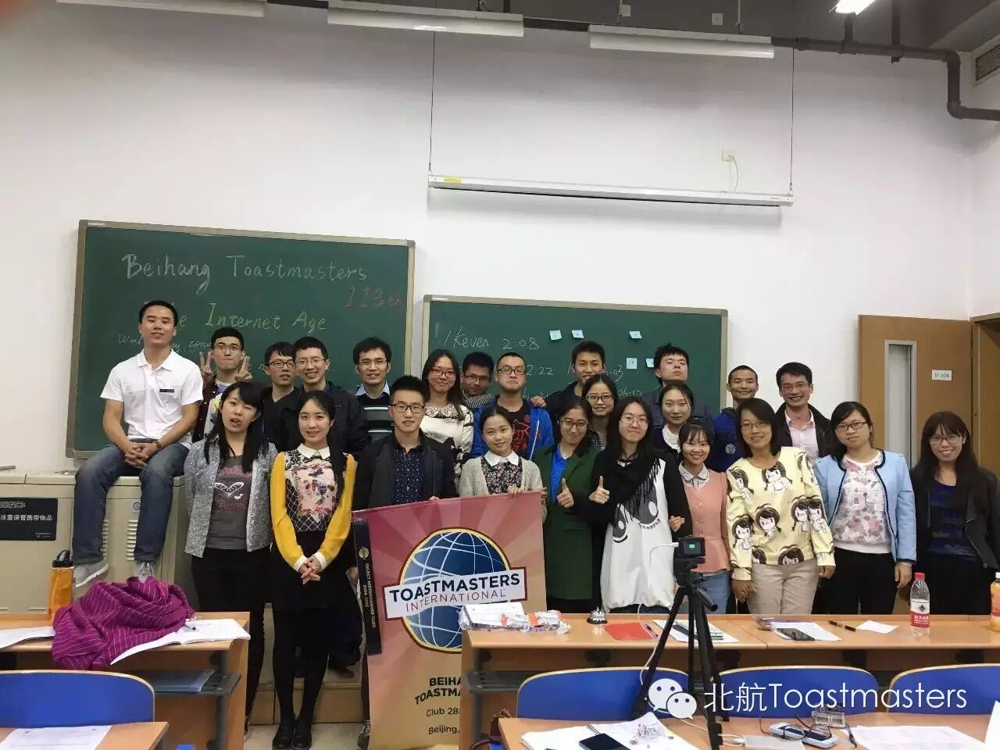
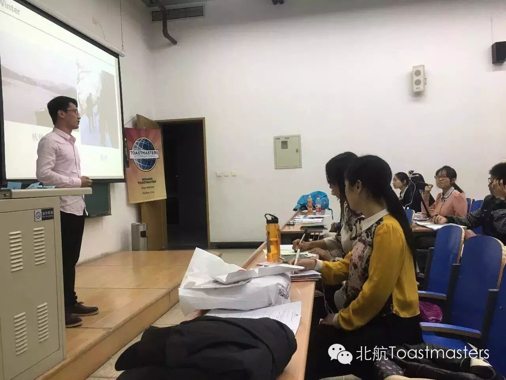
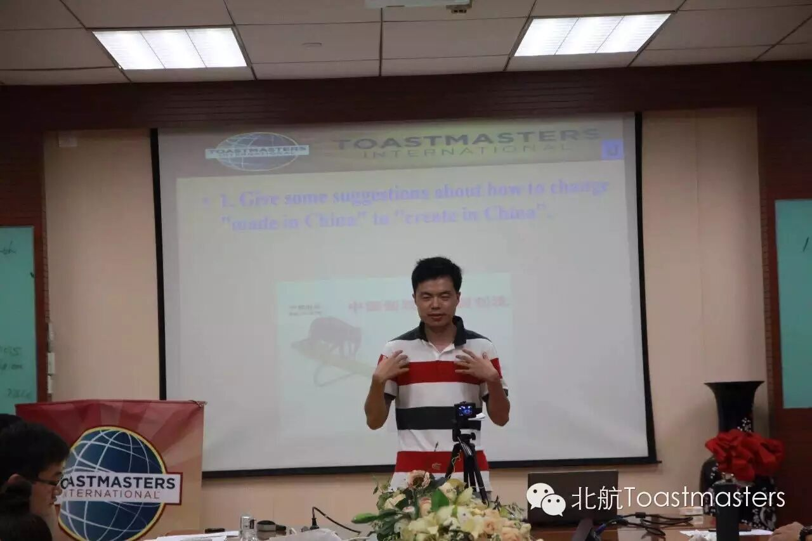
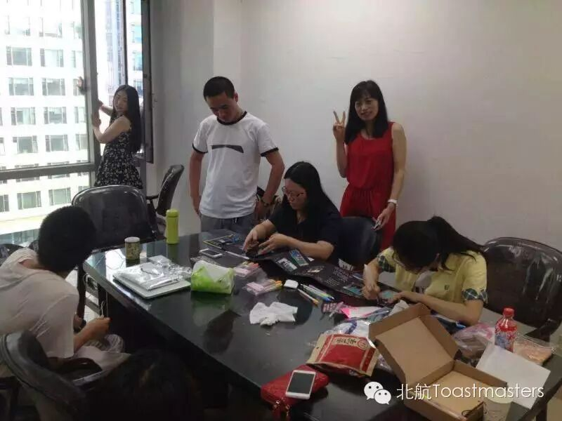
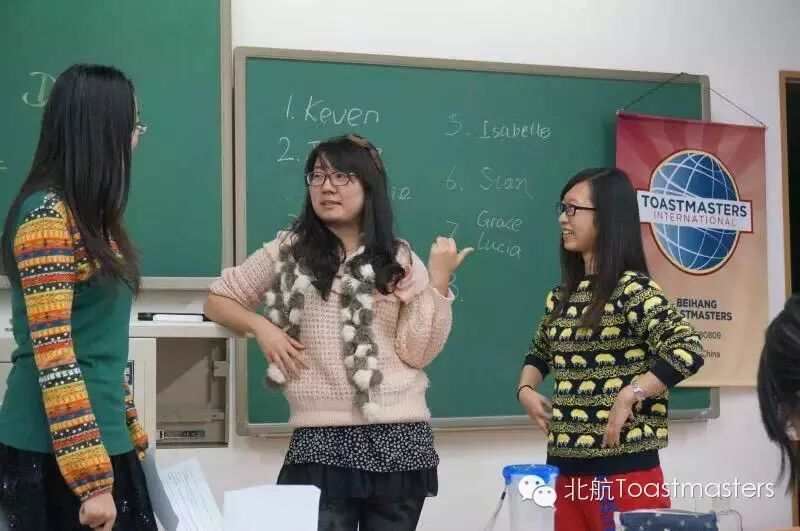
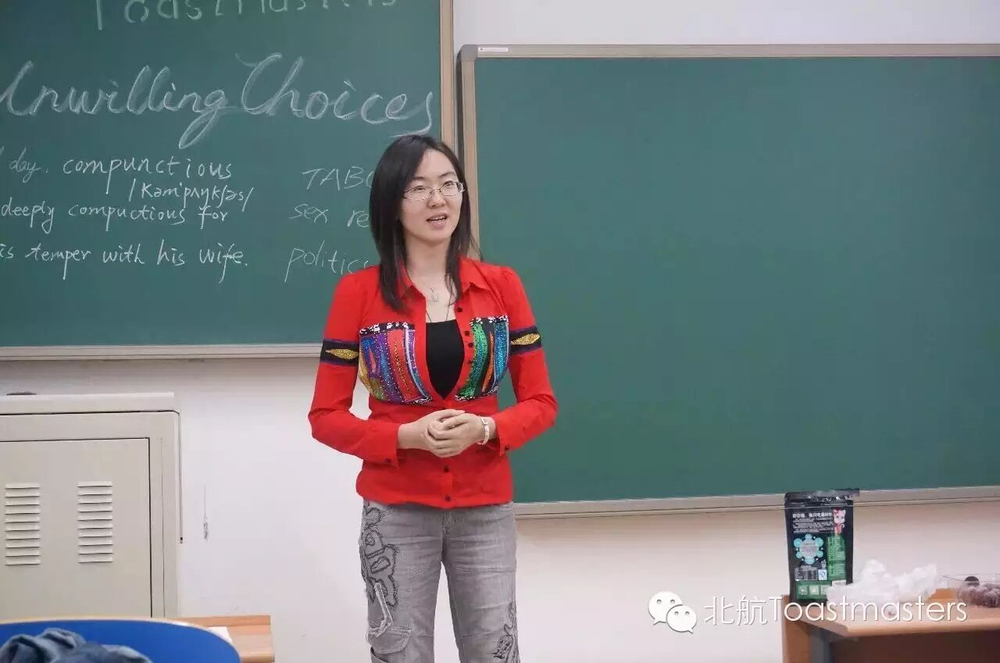
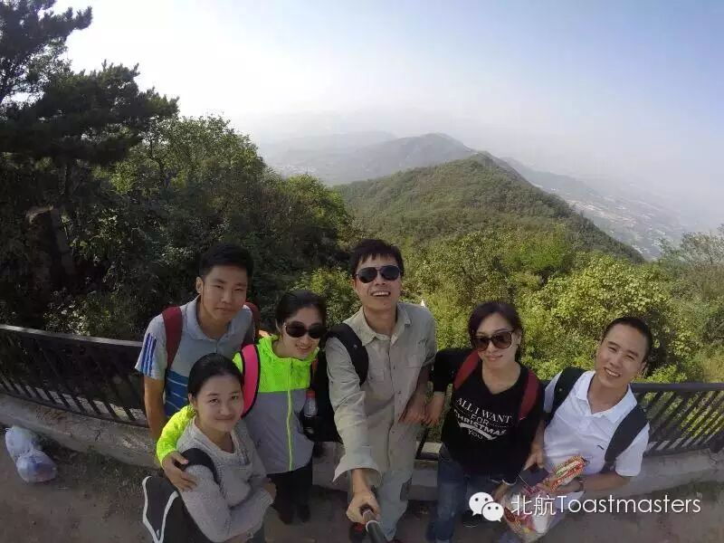
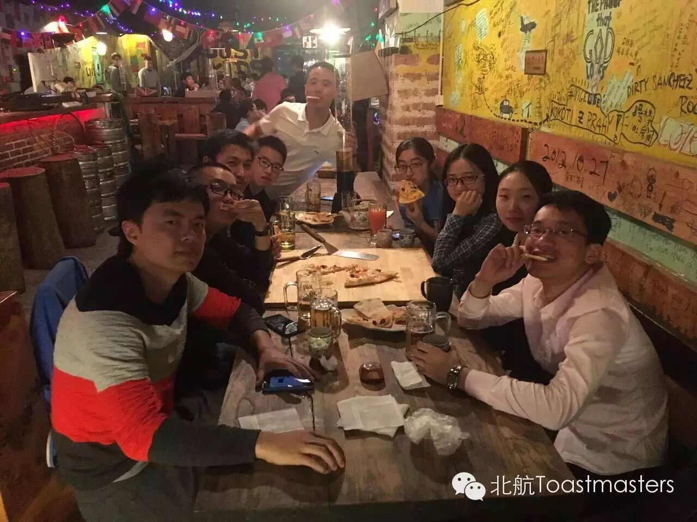

Beihang Toastmasters Club

北航Toastmasters国际英语演讲俱乐部
北航自己的英语演讲俱乐部, 欢迎各位同学来这里练口语、交朋友，更重要的是，
在这里，你不必担心说得不好，也不必担心自己基础不够，我们的成员大多数也并非英文专业。然而，我们这里有专业的Evaluators，
活动形式：
以即兴演讲、备稿演讲为主，每周更换活动主题，多个角色构成的专业化综合评价体系会给予演讲者详细点评，反馈便条和有奖问答的特色设计增强了会议的气氛，会议前、会议间歇和会后均提供自由交流机会。
活动时间：每周五19:30-21:30
活动地点：北航新主楼B104
我们所提供的：
中英文演讲平台

口语帝的诞生地

活动策划与主持机会

结识帅哥美女和外籍朋友的机会

领袖是练出来的

丰富的出游活动～

去野游、聚餐、真人密室逃脱吧！

所以，还在等什么？？？赶紧来加入我们吧~~！！！长按下图的二维码——
联系人:
Bowen(张博文)：
Tel：17801098588 WeChat：bowenjayconan
Maggie(马哲):
Tel：18518225289 WeChat：maggie0303mazhe
了解更多关于 Toastmasters的信息请登录www.toastmasters.org

原文链接（公众号关闭后可能失效）：
https://mp.weixin.qq.com/s/ls7-1B1BPFSMiB2MbFZFVg
https://mp.weixin.qq.com/s/ls7-1B1BPFSMiB2MbFZFVg
第 182/539 篇 · 北航Toastmasters英文演讲俱乐部公众号存档
本页为抢救式本地归档，图文已永久保存。
本页为抢救式本地归档，图文已永久保存。